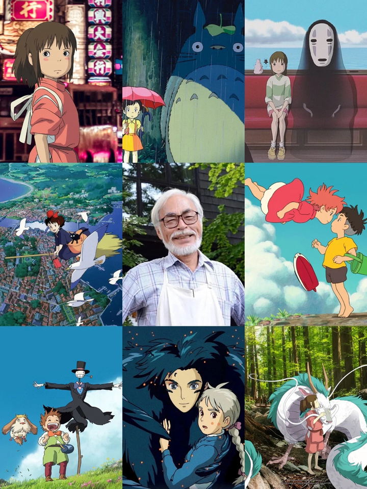

Il est célèbre pour ses films d'animation tels que "Le Voyage de Chihiro" et "Mon Voisin Totoro". Ses œuvres explorent la nature, la guerre et la croissance personnelle.

Hayao Miyazaki
Réalisateur Japonais
"Le monde n'est pas aussi simple que les uns voudraient le croire, et il n'est pas aussi mauvais que d'autres le croient."